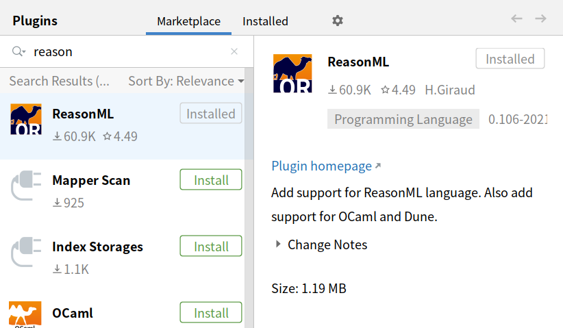
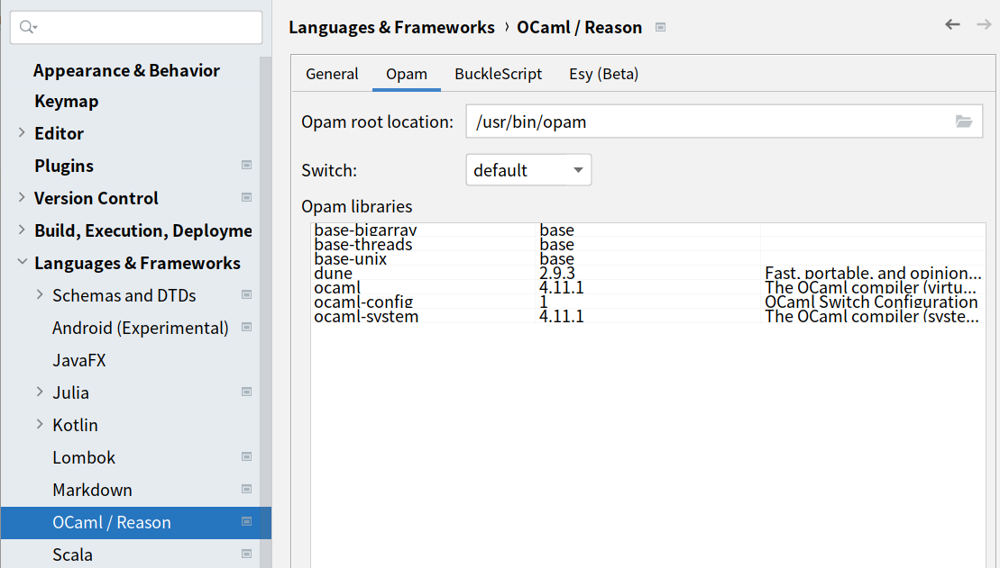
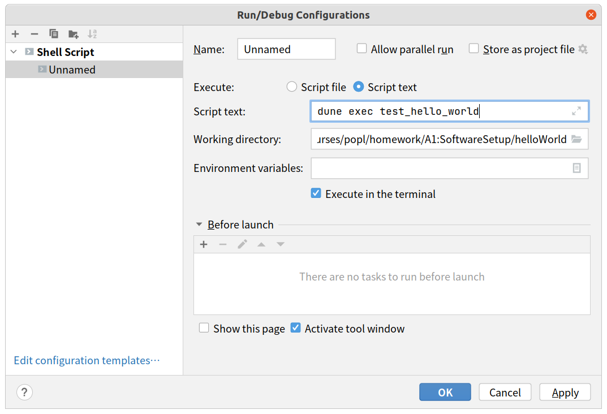

This document is a description of the installation of the experimental environment for this course. In order to reduce errors other than the experiment, please refer to the instructions in the document to configure the required experiment environment on your computer.
All experiments in this course are required to be completed on a Linux system. If you are a Windows or Mac OS user, please refer to the following steps to install a Linux virtual machine:
1. Download the Ubuntu system image: It is recommended to use a stable release version. We recommend that you install Ubuntu18 or above. You can visit the official Ubuntu website to download the system mirror, or visit the domestic mirror website to download the system mirror. Generally speaking, the download speed of the latter is more fast;
2. Install VMware or VirtualBox on your computer: Both software can be used to install and manage your virtual machine system. For VMware software, please refer to the blog to install Ubuntu image; for VirtualBox software, please refer to the blog to install Ubuntu image.
OCaml is a functional, imperative, modular, object-oriented general-purpose programming language. All experiments in this course need to be written in OCaml, you may read the official documentation to get started with the programming language.
Please follow this official tutorial to install the following three components on your system:
Since Intellij IDEA is a paid software, before the installation,we recommend you go to the official website of Intellij IDEA and use your USTC email to register an accountant. This will give you a one-year of Intellij IDEA Professional Edition Eligibility for free use.
You can download and install IntelliJ IDEA from the JetBrains official website, or from the built-in app store in Ubuntu.
(1) Launch IntelliJ IDEA and download the ReasonML plugin, as shown in the following figure:
(2) Download the test project we provide: helloWord. Open it with IntelliJ IDE.
(3) Click "settings" -> "Languages & Frameworks" -> "OCaml/Reason", click "Opam" on the right, enter the path of the Opam command in the root location (you can also enter "which opam" in the shell figure it out), and the installed function library will be automatically refreshed below after entering the path, save Settings. As shown below:
After you have successfully configured ReasonML, you can find the dune logo in the lower left corner of the IDE window. As shown below:
(4) Edit configuration: Select the configuration interface, click the "+" on the left and select "shell script", select "Script text", and enter the shell command "dune exec test_hello_world" in the "Script text" input box to save the configuration. As shown below.
(5) Click the "dune" in the lower left corner and select "Build Dune" to compile the OCmal program. Then run the program and output "Hello, World", indicating that your environment is configured correctly. If you are alerted to install dune, you can configure environment variables or enter the command "eval $(opam env)" in the shell.
Happy hacking!